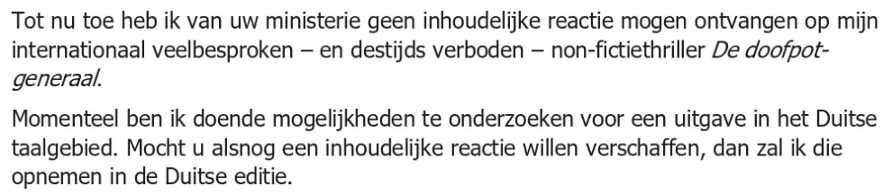

Prueba · Carta
Giltay al Ministerio de Defensa, 29 de junio de 2020
El pasaje
«Hasta ahora no me ha llegado de su ministerio ninguna respuesta sobre el fondo a mi thriller de no ficción De doofpotgeneraal, muy comentado internacionalmente —y prohibido en su momento—. Actualmente estoy estudiando las posibilidades de una edición en el ámbito de habla alemana. Si aun así desea usted ofrecer una respuesta sobre el fondo, la incluiré en la edición alemana». Página 1, los dos primeros párrafos de la carta a la ministra Bijleveld-Schouten, unidos aquí. Traducido del neerlandés; el texto original figura a continuación. De doofpotgeneraal es el título original neerlandés del libro El general del encubrimiento.
Texto original
“Tot nu toe heb ik van uw ministerie geen inhoudelijke reactie mogen ontvangen op mijn internationaal veelbesproken — en destijds verboden — non-fictiethriller De doofpotgeneraal. Momenteel ben ik doende mogelijkheden te onderzoeken voor een uitgave in het Duitse taalgebied. Mocht u alsnog een inhoudelijke reactie willen verschaffen, dan zal ik die opnemen in de Duitse editie.” En la carta, el título del libro figura en cursiva y, al final de una línea, escrito «De doofpot-generaal»; ese guion marca el corte de la palabra y no forma parte del título.

Por qué importa este documento
Estas son las cuatro cartas que Giltay entregó en persona en el Ministerio de Defensa el 29 de junio de 2020: una a la ministra Ank Bijleveld-Schouten y cartas de acompañamiento a otros tres destinatarios del ministerio. En ellas, Giltay se ofrecía a incluir una respuesta sobre el fondo en una edición alemana. El ensayo sostiene que, tras la sentencia del Tribunal Supremo de los Países Bajos de 2019, Giltay, una vez más, no recibió noticia alguna de Defensa. Esa sentencia se refería al caso de Srebrenica en el que los abogados de las Madres invocaron el libro. Estas cartas son la invitación formal de 2020 a la que remite el ensayo. Un mes después, la ministra comunicó a través del portavoz K.A. Meijer que Defensa no sentía la necesidad de responder sobre el fondo al libro.
Procedencia
- Documento
- Cuatro cartas de una página cada una, con un acuse de recibo fotografiado como quinta página
- Remitente
- Edwin F. Giltay, autor, La Haya
- Destinatarios
- Ministerio de Defensa, Plein 4, La Haya: la ministra A. Bijleveld-Schouten, con copias a la secretaria de Estado B. Visser, a la secretaria general G. van Craaikamp y a K. Meijer
- Fecha
- La Haya, 29 de junio de 2020
- Asunto
- «Inhoudelijke reactie op De doofpotgeneraal» (respuesta sobre el fondo a De doofpotgeneraal)
- Entrega
- Con la mención «in persoon afgegeven tegen bewijs van ontvangst» (entregado en mano contra acuse de recibo); el acuse de recibo de la página 5 enumera las cuatro cartas y está fechado el 29 de junio de 2020
- Anexo
- Un folleto en alemán
- Referencias
- El manuscrito enviado el 10 de marzo de 2014 a la ministra J. Hennis-Plasschaert, y un ejemplar de cortesía entregado el 9 de octubre de 2017 para K. Dijkhoff; la respuesta llegó por carta del Ministerio de Defensa del 29 de julio de 2020
- Idioma
- Neerlandés
- Páginas
- 5 en este PDF: la carta a la ministra, tres cartas de acompañamiento y el acuse de recibo
- Conservado por
- Edwin Giltay, el remitente
- Tachado
- En las cuatro cartas y en el acuse de recibo, la firma está tachada; la línea para el nombre de quien recibió las cartas se dejó en blanco
- Véase también
- Madres de Srebrenica, escrito de agravios, 7 de julio de 2015Tribunal Supremo de los Países Bajos, sentencia del 19 de julio de 2019 (ECLI:NL:HR:2019:1223)
Citado en: el ensayo «La prohibición cayó, el libro quedó en pie» en el capítulo (7) «Ninguna respuesta sobre el fondo».
Ficha de prueba: https://
Documento: https://
Modificado por última vez el 13 de septiembre de 2026, consultado el 27 de noviembre de 2026.

Esta página es una ficha de prueba del libro El general del encubrimiento de Edwin Giltay y del sitio web que lo acompaña.